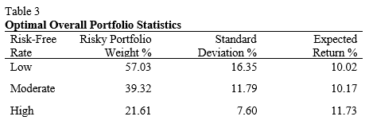
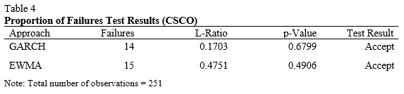

Forecasting Time-Series Data
Here I forecast commodity prices using a seasonal ARIMA model.
See ProjectThis project consists of three tasks and the dataset used is the daily stock price data for the period 31/12/97-31/12/08 of four US companies: CSCO, DIS, MSFT & WMT.
First, I will use Dickey-Fuller tests to analyze whether the natural logarithm of the stock price data is consistent with the weak-form Efficient Market Hypothesis.
Second, I compute the log-returns for the stock data and then compute a one-day ahead log-return forecast from an appropriate ARIMA model. Using this model I develop an automated trading strategy that uses the direction of the forecast from the model to determine when to invest. I start with a hypothetical $1000 and compare the results of the trading strategy to a basic buy-and-hold strategy.
Third, I compute the optimal risky portfolio weights and the optimal final portfolio weights for a portfolio of the four stocks and a single risk-free asset. I do this for three hypothetical values of the risk-free rate (low, med, high).
Lastly, I use the delta-normal approach to compute and graph the one-day ahead return-Value-at-Risk over the period 02/01/08-31/12/08. I then conduct backtesting and discuss my findings.
The weak-form efficient market hypothesis implies that there is no way to generate abnormal profits from technical or econometric analysis; however, it also implies that current asset prices may not reflect all possible information regarding a company. This means that there may be opportunities to generate abnormal profits through the discovery of fundamental company information that may not be available to everyone. For example, this information could include future dividend growth rates, earnings, revenue and capital expenditure. To test the weak-form efficient market hypothesis (EMH), we can employ a number of tests to see if the time series contains a unit root. One of the most widely used tests for this is the Augmented Dickey-Fuller (ADF) Test (Dickey and Fuller, 1979). This tests the null hypothesis that a unit root is present in the time series. The alternative hypothesis is that the series is stationary – that is, information from previous observations contain information that can be used to better predict future observations. I begin by taking the natural logarithm of the stock price time series so to dampen trends and reduce volatility. Figure 1.1 below shows the transformation of data.
The next step is to test the weak-form EMH via an ADF test on the log-transformed time series. It is clear that there is a nonzero constant so I ensure that the test used takes this into account by specifying the inclusion of a drift term in the model definition, ‘ARD’. Table 1 below shows the results of the test for our basket of stocks.
As you can see from the results, we are able to reject the presence of a unit root for Microsoft and Walmart but not for Cisco and Disney. This implies that the future prices of Microsoft and Walmart can be predicted. Further, the results suggest weak-form inefficiency in these two series. On the other hand, the time series representing Cisco and Disney stock prices are both weak-form efficient.

Developing an automated trading system relies on user-supplied assumptions. First, the user must identify a successful trading rule. The rule in this case is the direction of the one-step ahead ARIMA forecast of WMT’s log-returns. If the forecasted one-step ahead log-return is positive, the algorithm invests the total balance into the stock, if the forecasted return is zero or negative then the algorithm does nothing. In order to automate this process, we must design a system that stores and analyses the one-step ahead forecast and can pull the trigger based on that information. Figure 1.2 shows the transformations on Walmart’s stock data. I chose Walmart as I determined in the previous section that the series does not follow a unit root process and therefore, I can assume the mean and variance do not change over time.
Using the transformed series I must determine the correct autoregressive and moving average (ARMA) parameters for the log-returns to get an impression of the nature of the correlations in the series. The sample autocorrelation function (ACF) and sample partial autocorrelation function (PACF) are shown in Figure 1.3a and b, respectively. From these figures you can see significant spikes in lags 2, 5, and 7. In the interest of parsimony, I only consider up to lag number 2. This suggests an ARMA(2,2) model may be a good starting point for my data.
To automate the parameter selection, I included modified code from MATLAB’s file exchange (Chng, 2020) to determine the best ARMA model based on Bayesian Information Criterion (BIC). For each iteration of the loop, MATLAB determines the best ARMA parameters for the updated series. This ensures that the fitted model is the most suitable forecast model for that specific period in time. Figure 1.4 shows the fiscal performance of the strategy over 2008. The unadjusted balance shows the performance of a “buy and hold” strategy with the same starting balance.
If you were to invest $1000 in WMT stock on January 2nd, 2008, you would have achieved a return of 13.63%. However, using the ARIMA strategy for the same period would return 18.63% profit. Clearly this time series is weak-form inefficient as it is possible to achieve an abnormal profit using no extra information, just historical data.
Standard deviation is traditionally used as a measure of risk in financial asset returns, as implemented by Harry Markowitz (1952) in his work on portfolio theory. Markowitz classified this variance as risk and suggested a novel method of portfolio selection. He demonstrated that the standard deviation of returns on a portfolio of stocks can be less than the sum of each allocation’s individual standard deviation. This theory formalized the basic investment instinct that seeks to maximize expected return and simultaneously minimize the variance of returns. Nowadays, putting the theory into practice is relatively straightforward using statistical software packages such as MATLAB. I will determine optimal portfolio weights based on Modern Portfolio Theory and using monthly returns on the four stocks: CSCO, DIS, MSFT and WMT, and a single risk-free asset with three hypothetical risk-free annual rates: 2%, 6% and 10%. Table 2 below shows the optimal stock allocation for three different risk-free rate environments.
The results in Table 2 show that Disney is not appealing as it has a large variance and an historically low expected return. Cisco has the largest expected return and variance which is why we add more to the portfolio as the risk-free rate increases. Walmart has low variance and moderate expected returns which is why the stock is allocated a large portion of the portfolio in all risk-free rate environments. Microsoft has similar expected return to Walmart with more than double the variance which explains the small allocation. The addition of a risk-free asset to the portfolio greatly reduces the standard deviation of returns. Table 3 below shows the descriptive statistics for the optimal overall portfolios in each risk-free rate environment.
he results are unsurprising. As the risk-free rate increases, so does the expected return whilst at the same time the portfolio risk decreases as a result of taking a smaller position in the risky portfolio of stocks. The optimal capital allocations for each risk-free rate are graphed below in Figures 3.1a to 3.1c.

Value at Risk (VaR) is a popular measure of downside risk used by financial institutions and is often a risk management requirement enforced by the local financial regulator. Using the delta-normal approach to calculate VaR is relatively straightforward as we can assume that the log-returns for an asset are normally distributed. Therefore, we can use standard statistical theory relating to the probability of observing values of standard normal random variables within particular intervals.
I will employ the delta-normal approach to compute and graph the one-day ahead return-VaR for each of the stocks I have been analyzing throughout this study over the period of 2008.
Figure 4.1 above shows the Value at Risk calculations for CSCO with a 95% confidence interval. There are several techniques available for estimating and forecasting conditional volatility. I chose to compare two techniques; namely, the GARCH approach and the EWMA approach. Both EWMA and GARCH approaches place more weight on recent information than a simple moving average approach, therefore, I expect these techniques to react quicker to changes in returns. From Figure 4.1a, both techniques seem to produce similar results, indeed Figure 4.1c shows no distinct difference in number of violations of the 95% confidence interval. To truly compare the two methods, it is necessary to perform statistical tests on the efficacy of the two techniques. The proportion of failures test will be employed to directly compare the two methods. The results in Table 4 show the comparable statistics derived from the proportion of failures test, directly comparing the EWMA and GARCH delta-normal VaR approaches for CSCO.
Table 4 shows that both methods are acceptable techniques in estimating one-day ahead return-VaR for CSCO stock.
Now I will consider the more realistic situation in which I need to compute the one-day ahead return-VaR for a portfolio rather than a single asset. The portfolio in question is an equally-weighted portfolio of the four stocks I have been analyzing throughout this study. I will use the delta-normal EWMA approach to compute the one-day ahead return-VaR for the portfolio over the period of 2008.
From Figure 5.1 and 5.2, it is clear that the overall one-day ahead Value at Risk is less for a portfolio compared to a single asset. This follows from Markowitz’s Modern Portfolio Theory which I described in Q3. In Table 5, below, the proportion of failures test shows very similar results to that of the single asset. This implies that the VaR technique is equally as effective for a portfolio as it is for a single asset.
Thanks for checking out my work. If you enjoyed it and would like to see more, please use the links below.
Here I forecast commodity prices using a seasonal ARIMA model.
See ProjectIn this project I use machine learning to predict credit defaults.
See Jupyter Notebook